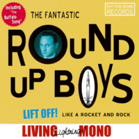

the Round Up Boys - Lift Off! Like A Rocket And Rock (Album, 2003)
01 - All That Rock (2:10)
02 - Bandstand Rock (2:23)
03 - Girls Wanted (2:01)
04 - Crawling Back To You (2:33)
05 - Standing In Your Window (2:03)
06 - Lift Off (1:42)
07 - Why Do You Do Me (2:09)
08 - I Always Wanna Rock (2:35)
09 - You're Mine (2:39)
10 - Rock And Roll Baby (2:19)
11 - I Need Your Lovin' Kiss(2:05)
12 - Rock It (2:09)
13 - The Buffalo Song (2:05)
14 - Rock With Me Betty (2:17)
15 - Tood-A-Loo (1:53)
16 - A Little Clock Rock (2:12)
© Rhythm Bomb Records :: [RBRCD 5601]
Notes
Berlin, Germany.
Michael 'Humpty' Kirscht - Vocals, Guitar
Michael Buschek - Guitar
Torsten Peukert - Drums
Markus 'Lucky' Lehmann - Doublebass
Axel Praefcke - Guitar
All tracks recorded at Ligthnings Recording Service
Produced by Axel Praefcke
Recording Engineers: Axel Praefcke and Ike Stoye
Cover art by Tiny Woods
Songs are written-by (here and further: written-by or or credited to) M. Kirscht: "All That Rock", "Bandstand Rock", "Girls Wanted", "Crawling Back To You", "Lift Off", "I Always Wanna Rock", "Rock And Roll Baby", "A Little Clock Rock"
Songs are written by A. Praefcke: "Why Do You Do Me (This Way)", "You're Mine", "Rock It", "The Buffalo Song" "Rock With Me Betty"
Song is written-by H. Johnson: "Standing In Your Window"
Song is written-by H. Jenkins: "I Need Your Lovin' Kiss"
Song is written-by R. Stanley: "Tood-A-Loo"
reference information: Discogs®
Review
031/366 (Project 366)
Great and exciting authentic Rock'n'Roll from astonishingly distinctive Rockabilly band. Feelings of fifties rockin' and rollin' tunes with revival mood and deliciously flavored with rockin' country and hillbilly. Their own songs with so stylish sound and genre patterns. Not only with instumental sound, but also with vocals and singing voice. Covers are very well too. And all is recorded in the old fashioned way with vintage equipment. Lovely and indeed the fantastic! So many hits on the tracklist - that I have to postpone full completed view of review. Since I need to listen to it too carefully.